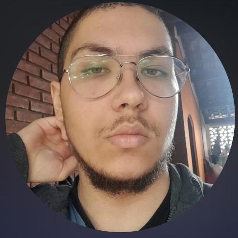

Nome
Felipe Terzi Gomes de Lima Costa.
Meus Objetivos
Atualmente, estou estudando HTML, CSS e Javascript, além de Python e banco de dados, para elaborar meus projetos pessoais e de carreira!
Sobre mim
Sou uma pessoa criativa, sempre disposto a estudar novos assuntos e expandir meus conhecimentos.
Nutro imenso apreço por jogos digitais e arte em geral.
Possuo familiaridade no campo de dispositivos eletrônicos. Cursei Game Design por três anos.
Tenho proficiência artística com ilustração e pintura, tanto digital como tradicional.
Habilidades
| Habilidade | Experiência Legal | Meta | Nota Pessoal |
|---|---|---|---|
| Já criei diversos personagens e histórias autorais. |
Mestrar uma campanha autoral de RPG |
9/10 | |
| Me sinto confortável em apresentações públicas. |
Aprender a me comunicar com os outros. |
4.5/10 | |
| Não tenho grandes dificuldades na parte lógica. |
Superar minha dificuldade com números. |
7/10 | |
| Costumo cozinhar para família e amigos. |
Ficar satisfeito com um bom resultado. |
7.9/10 |
Projetos
-
Portfólio Pessoal
Este site, feito com HTML e CSS e publicado no GitHub Pages.
Ver repositório -
Repositório Pessoal
Repositório usado como backup de arquivos acadêmicos.
Ver repositório -
Galeria de Desenhos
Algumas das minhas ilustrações.
Ver galeria